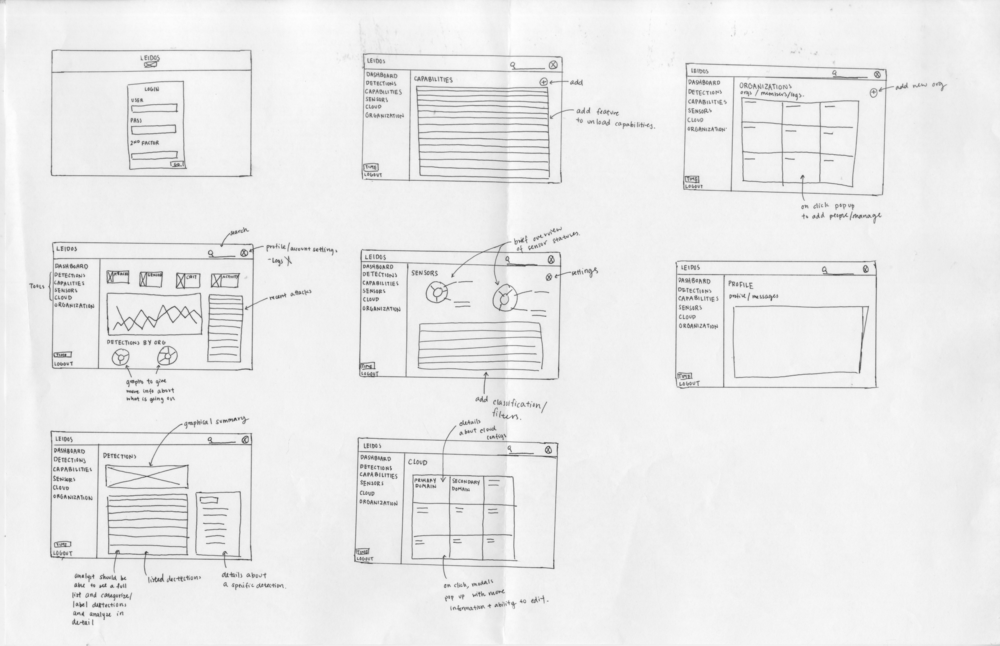
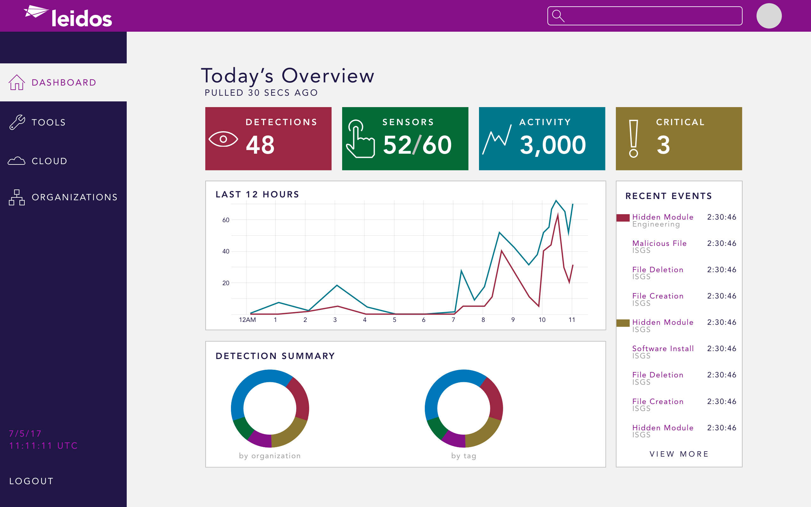
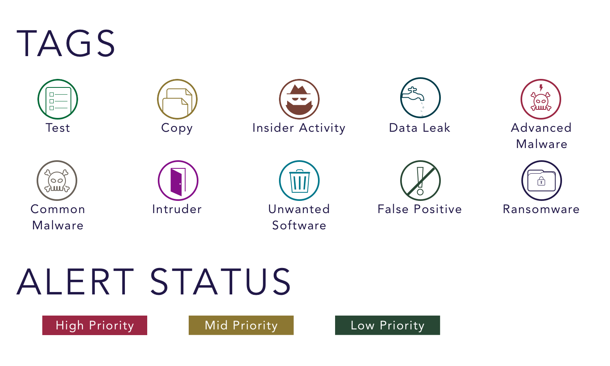

LIMA CHARLIE
may–july 2017
overview—
user interface/experience, mobile, front-end development
Sketch, Invision, Keynote
introduction—
This past summer, I interned on Leidos’s Cybersecurity Intelligence and Incident Response Team (CSIIRT). In addition to learning about the field and cybersecurity techniques, I worked on a project called LimaCharlie. On a team with four other interns, I worked as a software engineer and the sole designer.
problem space—
In 2016, Leidos went through a merger with Lockheed Martin ISGS, and consequently, the CSIIRT was looking for ways to strengthen and monitor the security of the company. As a result, my intern team focused on evaluating an open source endpoint security platform called Lima Charlie, developed by a Google security engineer. We wanted to examine LimaCharlie because it is open source, customizable, scalable and designed to reduce friction. Furthermore, LimaCharlie is cross platform and has good infrastructure support.
After examining the software’s user interface, the team agreed that the interface needed to be redesigned because it was very confusing and difficult to use. I took on the role of the designer for the project as well as working on the engineering parts.
project plan—
The general plan of our project was as follows:
- Set up an environment to simulate and test the functions of LimaCharlie
- Set up an isolated environment on VMWare ESXi server with a number of Windows virtual machine
- Added Windows Active Directory and a domain to imitate how a company’s system might function
- Created a local network between the machines for the attack
- Attack the system to evaluate LimaCharlie’s capabilities and manage detection data
Once setup was complete, we began attacking the system using a Kali Linux VirtualBox and BeaconStrike.
- A Excel file with malicious macros was downloaded onto a targeted machine
- Established a back door and persistence
- Moved through the network to steal a file from one of the machines
- Conducted such attacks multiple times to see what the system would detect
original design—
This is the original user interface of the LimaCharlie. It was not visually attractive, and the information hierarchy was very confusing and difficult to navigate through. Most importantly, because LimaCharlie is designed as a tool for cyberanalysts, the user interface should be designed to allow analysts to quickly grasp the company’s security status. The UI failed to meet the needs of cyber analysts, so I wanted to redesign the dashboard.
objectives—
After working with the user interface during the setup of LimaCharlie, I decided to redesign the user interface of the endpoint security platform. As I was designing, I had four main goals in mind:
- Scalability: Leidos is a company with over 30,000 thousand employees world wide. The UI had to be redesigned to fit the needs and the size of the company.
- Accessibility: Much of the information and data is not accessible from the user interface.
- Clarity: Information flow and hierarchy is very difficult to follow, and generally not very user friendly. It would take a cyber analyst a long time to figure out what was going on.
- Sustainability
sketches—
Before beginning, I did some background research to better understand what I was working with. I looked into the database of the LimaCharlie system to see how we could make sense of the data. Once we identified key attributes of the data, I started to sketch wireframes for the dashboard and different data visualizations we could potentially use. Two members of my team, who had more experience in cybersecurity, gave me some advice and ideas about the information flow and data use.

I drew information flow diagrams and low fidelity wireframes multiple times over the course of the summer. Whenever I finished an iteration, I would go to my fellow interns and project lead for feedback and suggestions. We decided on a few visualization techniques: timelines, pie charts, and a system of tags.
stakeholders—
The cyber analyst leading our project was a great resource over the course of our project. Because he and others on CSIIRT were actively invested in the results of our project, he was able to provide insight into the needs of the company’s security team. In order to validate and identify user needs, I showed him my work in every iteration. My interactions with him provided three main takeaways: (1) real time data and notifications, (2) scalability for a large company, (3) monitoring threats and reducing friction in the detection process.
background research—
Using Leidos’s branding guide, I moved on making high fidelity wireframes. I made use of color, animation, interaction, and visual aids to enhance and increase user accessibility and understanding of the data and all the functions that LimaCharlie had to offer. I also prototyped the security dashboard to see how interactions could aid and enhance user experience.

One of the biggest problems with LimaCharlie is the way detections, organizations, etc. are laid out. Even with our network of 10 virtual machines, we would have to scroll quite a bit just to see all the detections on a page. For a company of 30,000 people, this inability to access data quickly and efficiently would effectively cripple the security team’s capabilities. As a result, I decided to reorganize the data on many of the pages to make it more accessible and easier to read and added in search and filtering functions to speed up a cyber analyst’s ease of access.

In addition, I decided to add a tagging system to monitor the detections of attacks and activity. While LimaCharlie originally did have a very simple tagging system, I wanted to build upon it and add color and visual aids to make it easier for cyber analysts to monitor the detections by flagging detections with different alerts. Additionally, I also wanted to add user profiles to make monitoring the company's easier. That way, cyber analysts could assign detections to be monitored by certain individuals, making the security platform more manageable and efficient for the company.


Although LimaCharlie does have devices (computers) grouped by organization (i.e.. Engineering or HR), I felt that the security platform was not making use of these groupings. I added more graphs and filtering features to make the data more accessible and allow cyber analysts to make more sense of the data. For example, one of the graphs on the dashboard lists detections by organization. If Leidos Health gets more attacks than any other organization, then CSIIRT would know to strengthen security and investigate in that department.
future considerations
Creating a mobile application or mobile friendly version would be extremely beneficial to cyber analysts and security professionals. Real time notifications and monitoring are essential to minimizing damage. Given the limited time I had, I would have also loved to flesh out my ideas more into a fully fuctional prototype with more detailed interactions.